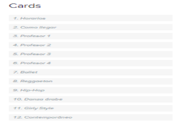

La estructura
El contenido primero
Usando como base los contenidos de las páginas web analizadas, y las respuestas de mis entrevistas y encuesta, elaboré una lista. Diseñé un card sorting abierto en Optimal Workshop para ver cómo los usuarios agrupaban los posibles contenidos y, las etiquetas que usaron con cada grupo, para usarlas eventualmente en el menú de la página de inicio.
